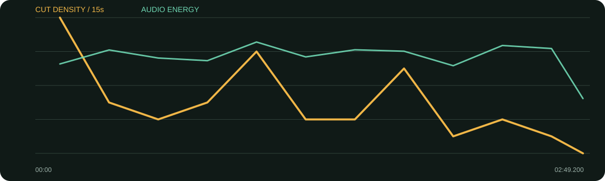

景别 / 机位系统
- 中景与近景同轴或近轴切换
- 手势开始时留中景，观点落点时推近
- 高调白背景与绿色服装形成稳定视觉锚
- 少量舞台/造型素材作为身份补充，不长期替代人物
白色高调布景把变量降到最低，剪辑只需要处理人物的表情、手势和语义。中景给动作，近景给态度，偶尔的造型/舞台画面为长回答换气。
口径说明：候选镜头由场景检测生成，闪光、人物快速动作、数字推拉和图形变化都可能误触发；逐秒重点由真实原片、字幕语义和全片总览人工选择。字幕来自本地中文语音识别，人名、品牌名与行业词可能有误，不把自动转写当逐字稿。
每张总览按时间顺序覆盖全片。它用于检查章节、B-roll密度和景别回环；详细切点以候选镜头表与下面的逐秒重点为准。
| 时间 | 章节 | 内容推进 | 剪辑任务 |
|---|---|---|---|
| 00:00–01:01 | 表现自我与野心 | 服装、MV与表达欲，得出野心不是坏事。 | 价值句前后换近景，形成第一章闭环。 |
| 01:01–01:32 | 演唱会的爽感 | 用体力消耗后的释放回答“最爽”。 | 节奏变轻，保留笑与动作。 |
| 01:32–02:06 | 长期目标 | 从小就知道自己要站在舞台上做音乐。 | 中景讲过程，近景落“注定做音乐”。 |
| 02:06–02:49 | 平行宇宙想象 | 由职业话题转入猫狗、树草的想象。 | 内容放松，结尾保留人物可爱与开放性。 |
少量舞台与时尚画面对应“表现、服装、舞台”等具体名词，是身份型B-roll。
综合音轨平均能量稳定，未做人声/音乐分轨；只能确认停顿与整体强弱，不能确认具体配乐起伏。
每张长图从左到右为真实的连续秒点。重点不是记住截图，而是看清一组画面怎样“进入—完成任务—退出”。
画面事实第一句话就是价值判断，画面简洁。
怎么复现选能代表整条片的原声金句，不先解释背景。
画面事实文字占据留白区，人物仍可完整表达。
怎么复现只留一个关键词层级，避免与字幕同权重。
画面事实景别更近，内容完成一次回环。
怎么复现结论前从中景切近景，比放大文字更自然。
画面事实轻松段结束后，问题/景别复位进入新主题。
怎么复现章节切换先换问题，再换景别，不要同时叠多种特效。
画面事实手势和表情变丰富，剪辑保留完整反应。
怎么复现人物有趣的岔题可留作结尾，建立人格而非只留观点。

| 观察项 | 15秒窗口 |
|---|---|
| 视觉最密 | 00:00–00:15（32.0 候选切镜/分）；01:00–01:15（24.0 候选切镜/分）；01:45–02:00（20.0 候选切镜/分） |
| 视觉最缓 | 02:45–02:49（0.0 候选切镜/分）；02:00–02:15（4.0 候选切镜/分）；02:30–02:45（4.0 候选切镜/分） |
| 综合音轨最强 | 01:00–01:15（-18.1 dBFS）；02:15–02:30（-19.3 dBFS）；02:30–02:45（-20.2 dBFS） |
“视觉最密/最缓”基于自动候选切镜；“综合音轨最强”包含人声、环境声、音乐和音效，不能单独当作配乐音量。平均综合音轨为 -22.39 dBFS，最高15秒窗口 -18.11 dBFS，最低15秒窗口 -36.84 dBFS。
| # | 入点 | 出点 | 时长 | 代表帧秒点 | 证据 |
|---|---|---|---|---|---|
| 1 | 00:00.000 | 00:04.120 | 4.12s | 0.750000s | 自动候选 |
| 2 | 00:04.120 | 00:07.960 | 3.84s | 4.870000s | 自动候选 |
| 3 | 00:07.960 | 00:08.320 | 0.36s | 8.122000s | 自动候选 |
| 4 | 00:08.320 | 00:08.880 | 0.56s | 8.572000s | 自动候选 |
| 5 | 00:08.880 | 00:10.040 | 1.16s | 9.402000s | 自动候选 |
| 6 | 00:10.040 | 00:10.720 | 0.68s | 10.346000s | 自动候选 |
| 7 | 00:10.720 | 00:11.320 | 0.60s | 10.990000s | 自动候选 |
| 8 | 00:11.320 | 00:11.640 | 0.32s | 11.464000s | 自动候选 |
| 9 | 00:11.640 | 00:16.640 | 5.00s | 12.390000s | 自动候选 |
| 10 | 00:16.640 | 00:18.240 | 1.60s | 17.360000s | 自动候选 |
| 11 | 00:18.240 | 00:20.280 | 2.04s | 18.990000s | 自动候选 |
| 12 | 00:20.280 | 00:26.280 | 6.00s | 21.030000s | 自动候选 |
| 13 | 00:26.280 | 00:32.320 | 6.04s | 27.030000s | 自动候选 |
| 14 | 00:32.320 | 00:35.080 | 2.76s | 33.070000s | 自动候选 |
| 15 | 00:35.080 | 00:37.720 | 2.64s | 35.830000s | 自动候选 |
| 16 | 00:37.720 | 00:46.000 | 8.28s | 38.470000s | 自动候选 |
| 17 | 00:46.000 | 00:48.160 | 2.16s | 46.750000s | 自动候选 |
| 18 | 00:48.160 | 00:52.280 | 4.12s | 48.910000s | 自动候选 |
| 19 | 00:52.280 | 00:56.120 | 3.84s | 53.030000s | 自动候选 |
| 20 | 00:56.120 | 01:01.520 | 5.40s | 56.870000s | 自动候选 |
| 21 | 01:01.520 | 01:03.320 | 1.80s | 62.270000s | 自动候选 |
| 22 | 01:03.320 | 01:04.280 | 0.96s | 63.752000s | 自动候选 |
| 23 | 01:04.280 | 01:05.560 | 1.28s | 64.856000s | 自动候选 |
| 24 | 01:05.560 | 01:07.560 | 2.00s | 66.310000s | 自动候选 |
| 25 | 01:07.560 | 01:08.880 | 1.32s | 68.154000s | 自动候选 |
| 26 | 01:08.880 | 01:12.320 | 3.44s | 69.630000s | 自动候选 |
| 27 | 01:12.320 | 01:17.600 | 5.28s | 73.070000s | 自动候选 |
| 28 | 01:17.600 | 01:22.440 | 4.84s | 78.350000s | 自动候选 |
| 29 | 01:22.440 | 01:25.080 | 2.64s | 83.190000s | 自动候选 |
| 30 | 01:25.080 | 01:34.640 | 9.56s | 85.830000s | 自动候选 |
| 31 | 01:34.640 | 01:38.200 | 3.56s | 95.390000s | 自动候选 |
| 32 | 01:38.200 | 01:43.880 | 5.68s | 98.950000s | 自动候选 |
| 33 | 01:43.880 | 01:48.120 | 4.24s | 104.630000s | 自动候选 |
| 34 | 01:48.120 | 01:50.320 | 2.20s | 108.870000s | 自动候选 |
| 35 | 01:50.320 | 01:51.640 | 1.32s | 110.914000s | 自动候选 |
| 36 | 01:51.640 | 01:56.160 | 4.52s | 112.390000s | 自动候选 |
| 37 | 01:56.160 | 01:57.840 | 1.68s | 116.910000s | 自动候选 |
| 38 | 01:57.840 | 01:59.160 | 1.32s | 118.434000s | 自动候选 |
| 39 | 01:59.160 | 02:09.160 | 10.00s | 119.910000s | 自动候选 |
| 40 | 02:09.160 | 02:13.640 | 4.48s | 129.910000s | 自动候选 |
| 41 | 02:13.640 | 02:17.880 | 4.24s | 134.390000s | 自动候选 |
| 42 | 02:17.880 | 02:20.920 | 3.04s | 138.630000s | 自动候选 |
| 43 | 02:20.920 | 02:24.520 | 3.60s | 141.670000s | 自动候选 |
| 44 | 02:24.520 | 02:31.800 | 7.28s | 145.270000s | 自动候选 |
| 45 | 02:31.800 | 02:38.840 | 7.04s | 152.550000s | 自动候选 |
| 46 | 02:38.840 | 02:46.760 | 7.92s | 159.590000s | 自动候选 |
| 47 | 02:46.760 | 02:49.200 | 2.44s | 167.510000s | 自动候选 |